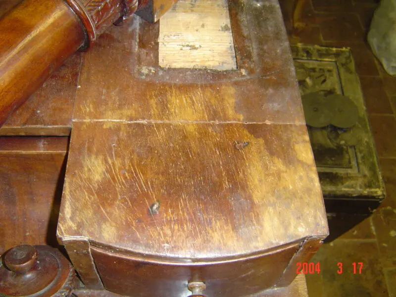
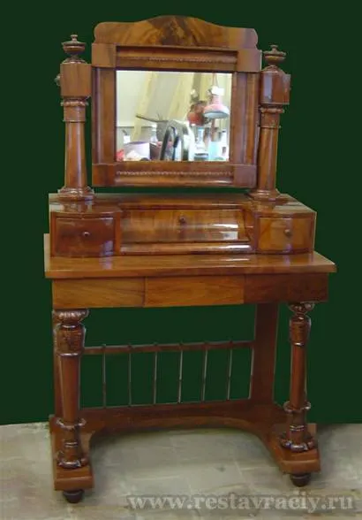
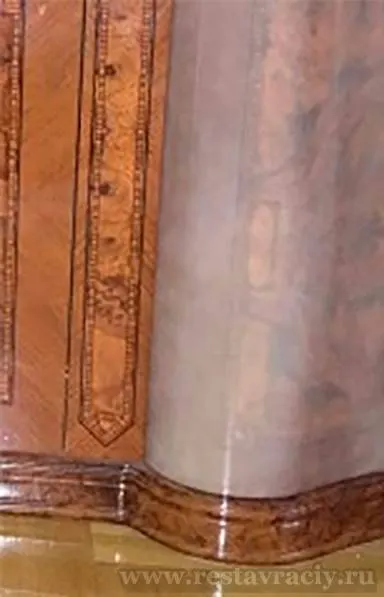
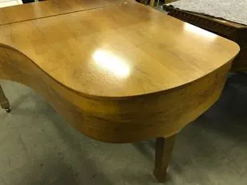
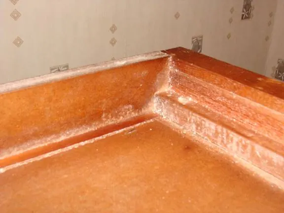
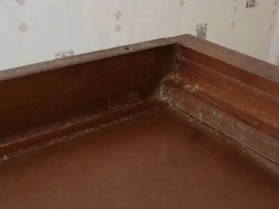

Работы и техники
Пятна на мебели
В условиях мастерской удалить пятна на мебели возможно практически бесследно.

О чём рассказывает мастерская
- Белые пятна от спирта
- Пятна от ацетона
- Пятна от утюга, горячего и прямых солнечных лучей
- Белые пятна от воды
- Белые пятна на современной дорогой мебели
- Выгорело на солнце
- Белый налет на мебели
В материале мастерской
Фотографии и детали
Открыть снимок у мастерской 


Открыть снимок у мастерской


Открыть снимок у мастерской


Открыть снимок у мастерской


Открыть снимок у мастерской


Открыть снимок у мастерской


Открыть снимок у мастерской
Посмотреть снимки с сайта мастерской 2
Оригинальные фотографии откроются здесь с сайта мастерской.
 Открыть снимок у мастерской
Открыть снимок у мастерской  Открыть снимок у мастерской
Открыть снимок у мастерской Есть похожая вещь?
Подберите ракурсы для предварительной оценки.